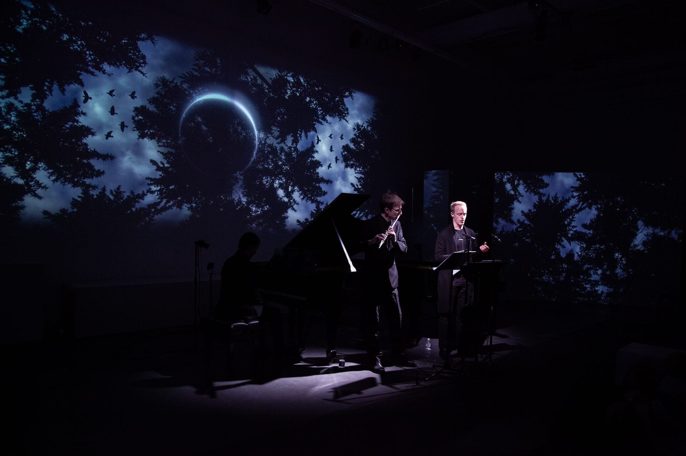

The Bringer of Peace

Words and melody grow within this performance led by the baritone voice. The disparity between pieces like Piano Phase and Falla's compositions immerse the listener in an eclectic universe supported only by the sensitivity of the audience. The alteration of the pieces by Caplet, Gaubert, and Falla for baritone voice, takes this music to another dimension. Supported by the visual creations of Spanish video artist Robert Sirvent.
Gallery
Programme
- Albert Roussel
Two poems by Ronsard for voice & flute
Nightingale, my pretty
Heaven, air and wind
- Gustav Holst
The Planets for two pianos
II. Venus - The Bringer of Peace
IV. Neptune - The mystic
- Manuel De Falla
Spanish folk Songs for voice & piano V. Lullaby
III. Asturian
- Andre Caplet
An invisible flute
for voice, flute & piano - Phillipe Gaubert
Pagan Evening
for voice, flute & piano - John Harbison
Flashes and Illuminations for voice & piano
On the Greve
Chemin de Fer
The Winds of Dawn
Cirque d’Hiver
To Be Recited to Flossie on Her Birthday
December 1
video art by Robert Sirvent
- Steve Reich
Piano Phase for two pianos
Performers
- Nathaniel Sullivan,baritone
- Nuno Marques, piano
- Guillermo Laporta, flute
- Josefina Urraca, piano
- Robert Sirvent, video artist